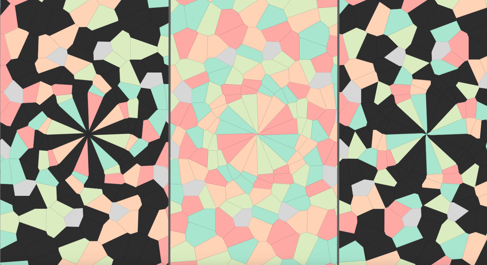

The mode determines how the control points are arranged, how they move during the course of the animation,
and which parameters affect their movement. Currently there are two modes, each with enough depth to create a wide
range of effects, but there are many still to be explored.
-
In mode 0, the points are arranged in concentric circles, which can rotate in sync or in alternating directions.
The circles can be "perturbed" or moved off-center, creating an off-kilter effect.
-
In mode 1, the points are arranged in a circle of rings, with an additional "wheel" passing through the center of
the rings. As the size of the rings grows, they overlap and form complex interlocking shapes.
The color mode, along with num colors, determines the pattern for coloring the polygons. Simply changing
these settings can have striking effects, highlighting different substructures within the overall shape.
-
In color mode 0, all polygons are colored, rotating through a palette of colors.
-
In color mode 1, each ring has one color, alternating between the palette colors and black.
-
In color mode 2, each ring has one color, but each polygon in the ring alternates between that color and black.

The same scene drawn in three different color modes.
The sequencer is a proof-of-concept that needs some more work to be truly functional. Planned enhancements include:
- Saving and loading of sequence files.
- Scrollable list of sequence parameters.
- Adjusting the length of the sequence.
- A multi-shape LFO that could be added to any parameter.
- Video export.